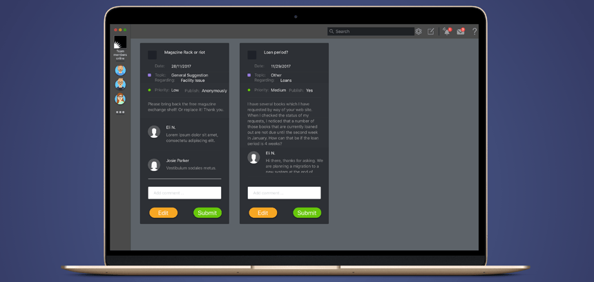

Welcome To My Page!
I am currently pursuing a Master of Science in Information with a specialization in UX Design and Human-Computer Interaction. I am passionate about creating memorable experiences that have a lasting impact.
Portfolio

Plate Forward
Nonprofit UX Design Sprint
YDCV Consulting
Contextual Inquiry Case Study
Engineering Open House

Graphic/Brand Design

1. Research
This is where I try to define the problem and empathize with the users. What currently exists that attempts to solve the problem? What are the contrasints of the stakeholders?
2. Ideate
Using what I learned from the research, I try to visualize the user's needs and come up with as many solutions as possible. The key here is to not hold on to a single solution and let the mind wander with various solutions. If there are major gaps, I go back and do more research.
3. Prototype
I try to produce as many sketches and low-fidelity prototypes as possible while attaining to the user's needs.
4. Test
Then, it comes to testing my findings and my sketches with users. I try to aim for 3-6 users but it depends on the scale and scope of the project.
Vladimir Who?
Vladimir's curiosity for all things technology drives his craving to solve complex problems with a human-centered design approach. Some things that keep him up at night are; figure out the best way to make the physical space around him more accessible and user-friendly, learn the pros and cons of augmented/virtual reality and how to effectively implement it into everyday life and figure out what toppings to get on his pizza. Some of his tools of success are; a notepad, laptop with Photoshop and Sketch, and J Cole's 2014 Forests Hill Drive album. He grew up in the Chicagoland area. Chicago is known for its rich history of diverse culture, food, music, people and politics which constantly influences Vladimir's thinking and work. Vladimir is always looking out for new music, try new food and find running new paths. Currently, he is thinking about product design, AI, accessibility, wearable technology, and VR.

Education
My undergraduate education was in Psychology from the University of Illinois at Urbana-Champaign. There, I was drawn to studying human behavior. After discovering that there was a field of study that allowed me to combine technology and psychology, I knew I had to pivot. I shifted my focus to solving problems through design which lead me to pursue a Masters of Science from the University of Michigan. There I am focusing on Human-Computer Interaction.


My Culture
Although my household spoke Russian, I never received a proper education in Russian in terms of grammar, reading, and writing. In college this made me uncomfortable so I went out and enrolled in Russian grammar courses. This led me to obtain a minor in Russian, East European and Eurasian Studies and win the U.S. National Foreign Language and Area Studies Fellowship. I had grown to further develop my language and the history of Russia through literature and media.
Adventurous
From jumping out of planes to hiking mountains in Japan, I have a passion to try new things. I also enjoy figuring how a gadget works which leads me taking it apart and putting it back together. This led to fixing a lot of iPhones, computers, and Xbox Controllers. In addition to these, I call myself a gamer because at the end of the day, solving puzzles and rescuing the princess from castles is not much different than solving problems through a human-centered design approach.